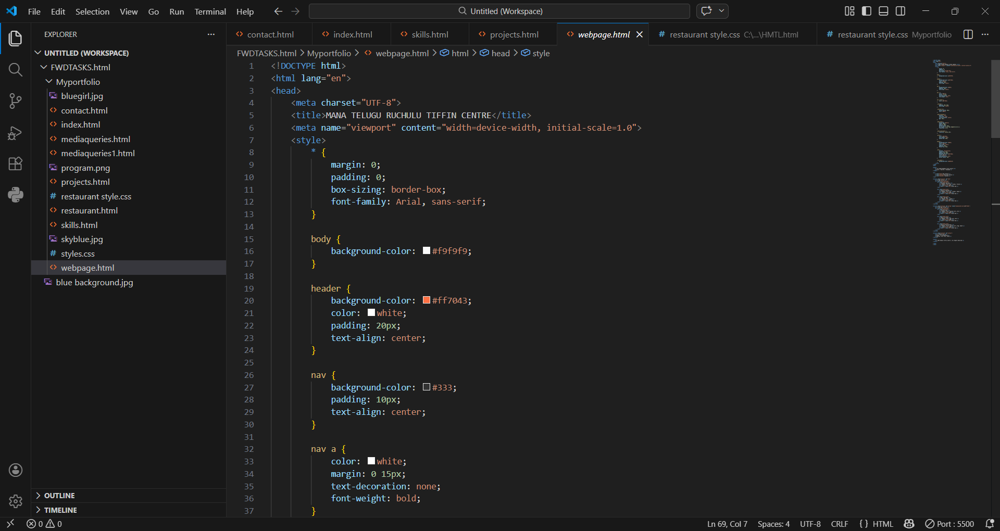
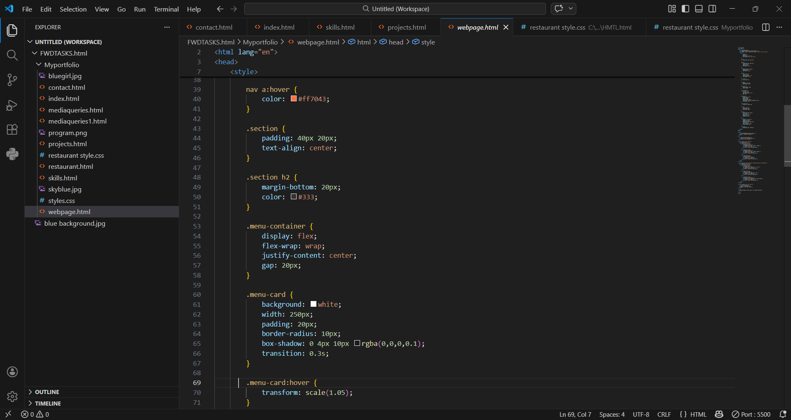
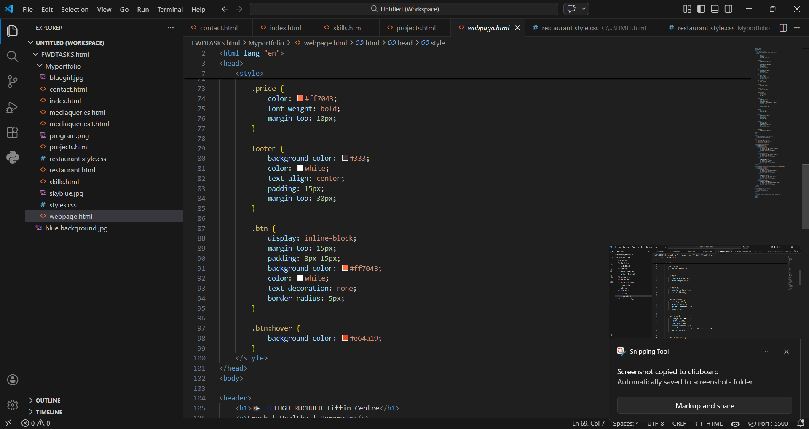
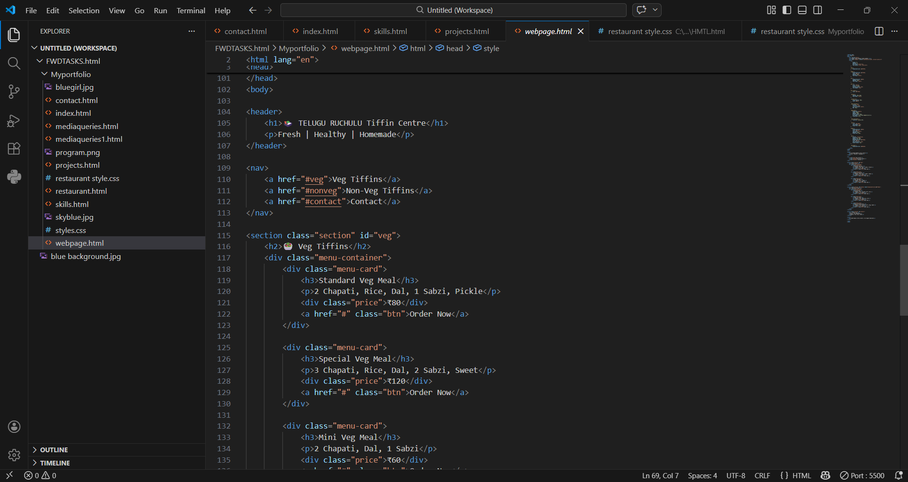
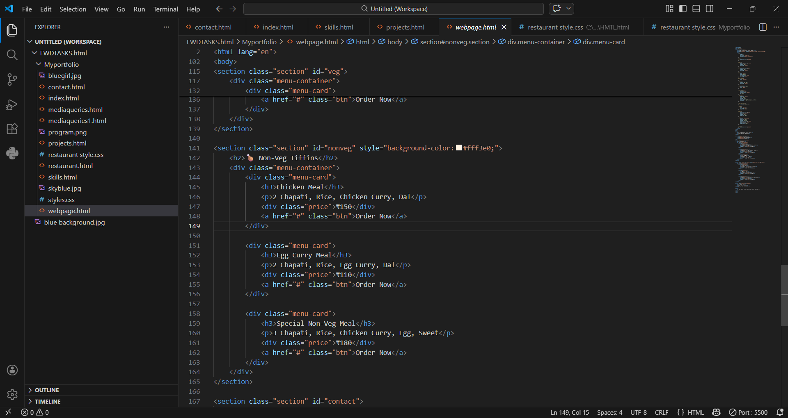
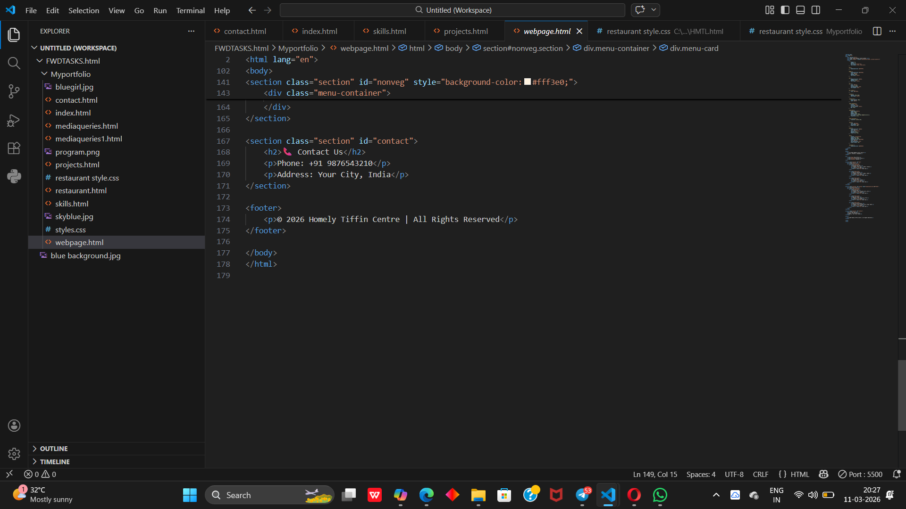

Brief Description - The page starts with a header that displays the restaurant name and tagline. - A navigation bar (nav) provides links to different sections: Veg Tiffins, Non-Veg Tiffins, and Contact. - Two main sections showcase Veg and Non-Veg menu items, each styled with cards (.menu-card) that include dish names, descriptions, prices, and an "Order Now" button. - A contact section provides phone and address details. - Finally, a footer closes the page with copyright information. - CSS styles define the layout, colors, spacing, hover effects, and responsive design using flexbox





